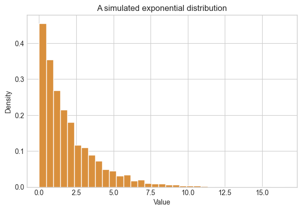

# NumPy generates random samples; Matplotlib displays them.
import numpy as np
import matplotlib.pyplot as plt
plt.style.use("seaborn-v0_8-whitegrid")
# A fixed seed makes the examples reproducible: everyone sees the same draw.
rng = np.random.default_rng(4520)Probability distributions and simulation

Engineers use probability distributions to describe quantities that vary: a manufacturing dimension, a load, a sensor reading, or an emission measurement. In this notebook, you will use NumPy to simulate and visualize a few common distributions.
This is preparation for our in-class discussion of the central limit theorem (CLT). We will discuss sampling distributions, formal hypothesis tests, and p-values together in class.
Learning objectives
- Draw random samples from normal, uniform, and exponential distributions with NumPy.
- Use histograms to compare the shapes of simulated distributions.
- Calculate and interpret a sample mean and standard deviation.
- Relate a distribution to both a familiar situation and a possible engineering application.
1. Set up a simulation
A simulation creates artificial observations according to rules we specify. This lets us isolate one statistical idea at a time before working with messier engineering measurements.
2. Draw samples from probability distributions
A distribution describes the values a variable can take and how frequently different values occur. We will begin with three useful distribution shapes. These are useful approximations, not automatic labels for every engineering variable: choosing a distribution should be guided by the physical mechanism and by observed data.
Normal distribution
A normal distribution is symmetric around a typical value and is often useful when many small, independent sources of variation add together. A familiar example is adult height within a relatively homogeneous population. An engineering example is repeated measurements of a machined part’s diameter when the process is stable.
rng.normal(loc, scale, size) draws size observations with mean loc and standard deviation scale.
# Simulate 1,000 measurements centered at 50 with a spread of 8.
normal_sample = rng.normal(loc=50, scale=8, size=1_000)
fig, ax = plt.subplots(figsize=(7, 4.5))
ax.hist(normal_sample, bins=30, color="#4a90c2", edgecolor="white")
ax.set(
xlabel="Simulated measurement",
ylabel="Number of observations",
title="A simulated normal distribution",
)
plt.show()
print(f"Sample mean: {normal_sample.mean():.2f}")
print(f"Sample standard deviation: {normal_sample.std(ddof=1):.2f}")
Sample mean: 49.76
Sample standard deviation: 7.84Try it
Draw a normal sample centered at 100 with a standard deviation of 15. How do its histogram and sample summary differ from the one above?
# my_sample = rng.normal(loc=..., scale=..., size=...)
# print(my_sample.mean())
# print(my_sample.std(ddof=1))Uniform distribution
In a uniform distribution, every value in an interval is equally likely. A familiar example is an ideal random-number generator that returns any number from 0 to 1. An engineering simulation might choose an initial shaft angle at random between two limits, or sample evenly across an allowable tolerance range.
rng.uniform(low, high, size) draws values evenly between two limits. Unlike the normal distribution, it has no single central value that is more likely than another within that interval.
# Draw 5,000 values with equal probability anywhere from 0 to 10.
uniform = rng.uniform(low=0, high=10, size=5_000)
fig, ax = plt.subplots(figsize=(7, 4.5))
ax.hist(uniform, bins=35, density=True, color="#77a464", edgecolor="white")
ax.set(title="A simulated uniform distribution", xlabel="Value", ylabel="Density")
plt.show()
Exponential distribution
An exponential distribution is nonnegative and right-skewed, so it is often used to model waiting times. A familiar example is the waiting time until the next customer arrives when arrivals occur independently at a roughly constant average rate. In engineering, it can model the lifetime of one component when its instantaneous failure rate is assumed constant: a component that has already operated for 10 hours is, under this simplified model, no more or less likely to fail in the next hour than a new one.
rng.exponential(scale, size) draws nonnegative, right-skewed values. Its average is approximately scale; most draws are relatively small, but occasionally a much larger value occurs.
# Draw 5,000 waiting times with an average value of 2.
exponential = rng.exponential(scale=2, size=5_000)
fig, ax = plt.subplots(figsize=(7, 4.5))
ax.hist(exponential, bins=35, density=True, color="#d9903d", edgecolor="white")
ax.set(title="A simulated exponential distribution", xlabel="Value", ylabel="Density")
plt.show()
Check-in
- Which simulated distribution is symmetric? Which is right-skewed?
- In
rng.normal(loc, scale, size), what does each argument control? - Give one setting in which a uniform distribution would be a reasonable model, and one in which it would not.
Keep your answers in your own notes. Bring your questions about these distributions and the CLT to class.